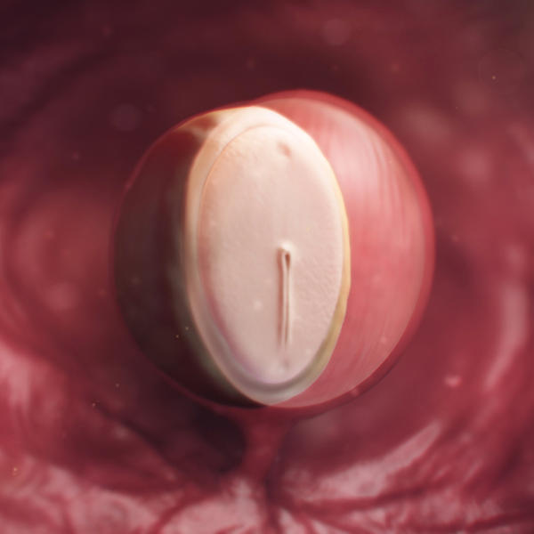
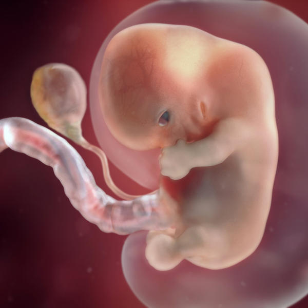
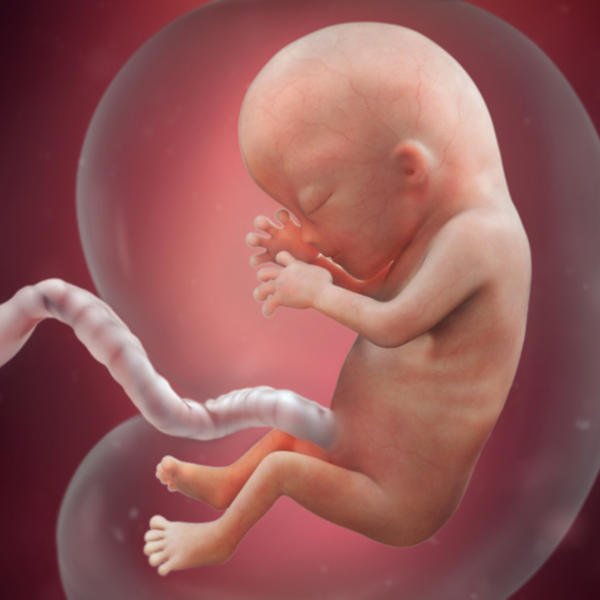
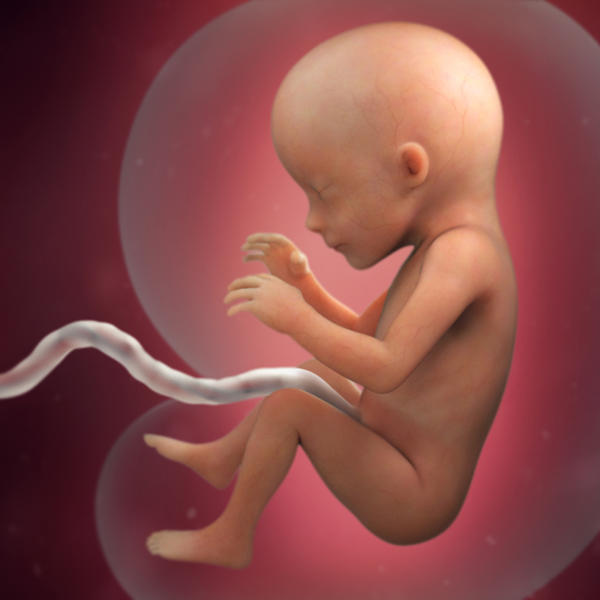
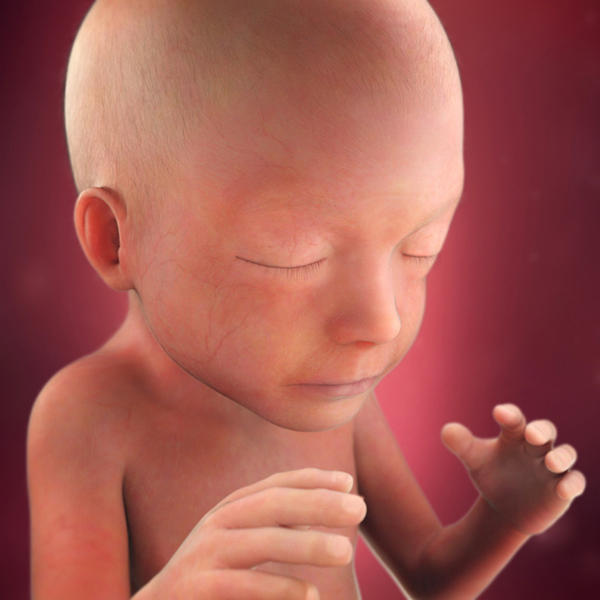
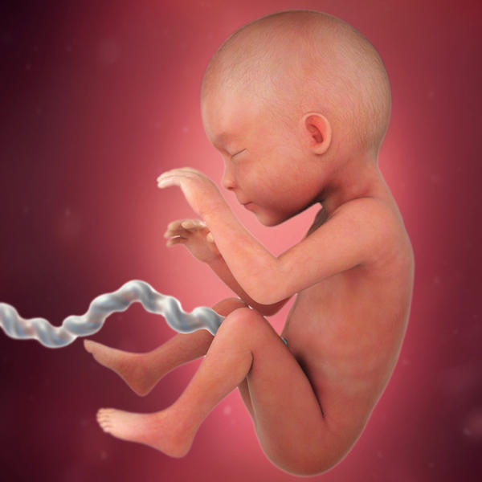
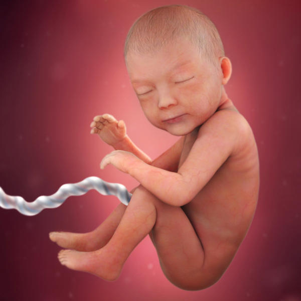
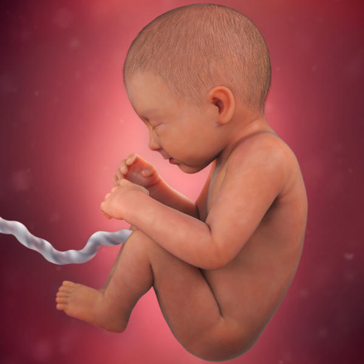
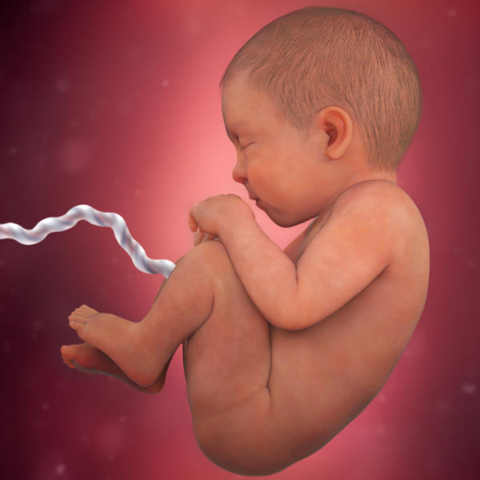

Follow your baby's development from a tiny mass of cells through to a fully developed baby. Our illustrations show how your baby is growing inside your womb (uterus), look at a baby from conception to labour and birth.
One month pregnant

Your baby is an embryo consisting of two layers of cells from which all her organs and body parts will develop.
Two months pregnant

Your baby is now about the size of a kidney bean and is constantly moving. He has distinct, slightly webbed fingers.
Three months pregnant

By now your baby is around 7 to 8 centimeters (3 inches) long and weighs about the same as a pea pod. Her tiny, unique fingerprints are now in place.
Four months pregnant

Your baby is now about 13cm (5.5in) long and weighs 140g (5oz). His skeleton is starting to harden from rubbery cartilage to bone.
Five months pregnant

Eyebrows and eyelids are now in place. Your baby would now be more than 27cm (10.5in) long if you stretched out her legs.
Six months pregnant

Your baby weighs about a 660g (1.5lb). His wrinkled skin is starting to smooth out as he puts on baby fat.
Seven months pregnant

By now, your baby is more than 40cm (15in) long. She can open and close her eyes and probably see what's around her.
Eight months pregnant

Your baby now weighs about 2.2kg (4.7lb). His layers of fat are filling him out, making him rounder, and his lungs are well developed.
Nine months pregnant

Your baby is almost due. At birth, the average baby is more than 51cm (20.5in) long from head to toe and weighs approximately 3.4kg (7.5lb), but babies vary widely in size at this stage.
*Source: baby center uk website